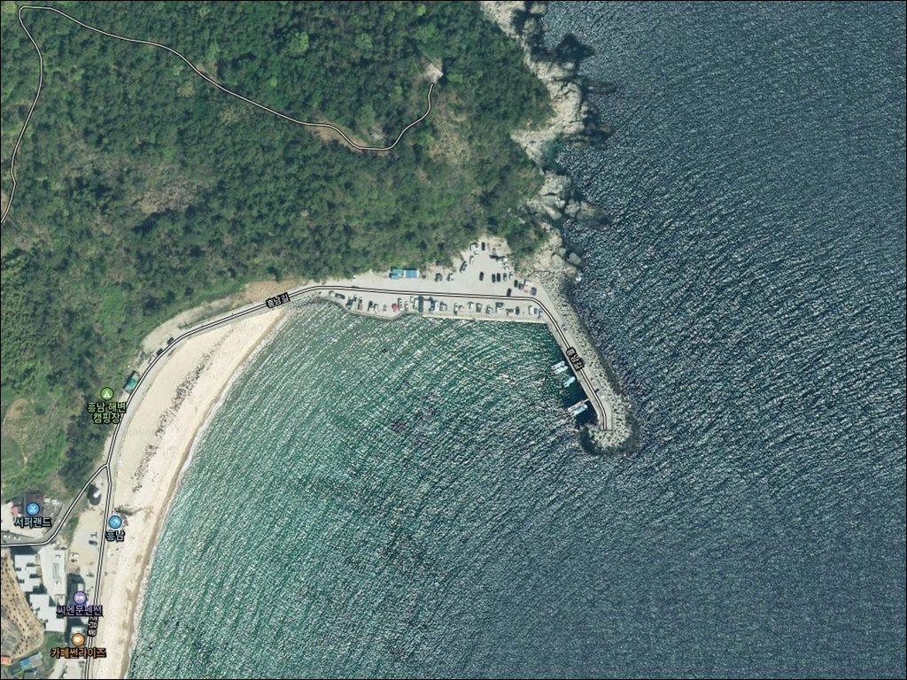
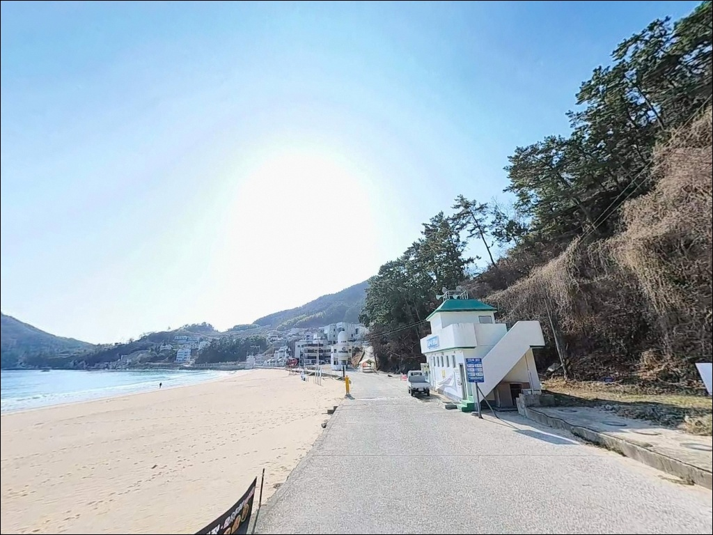
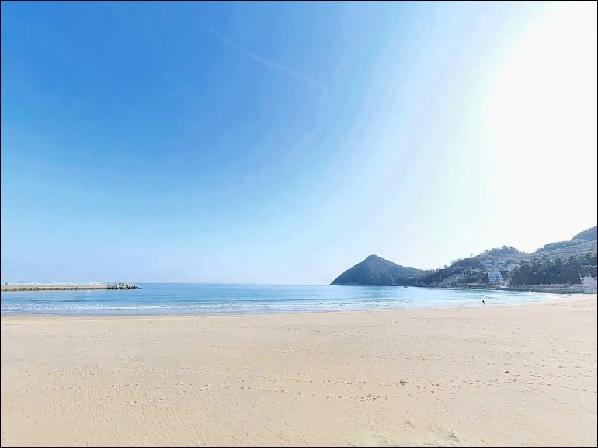
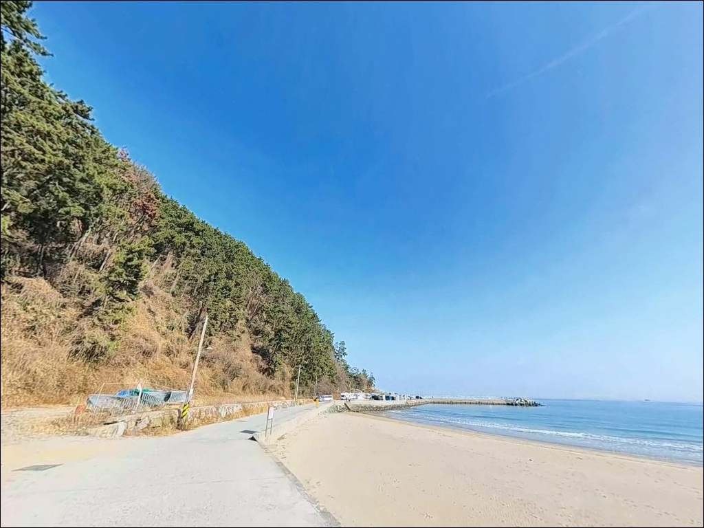
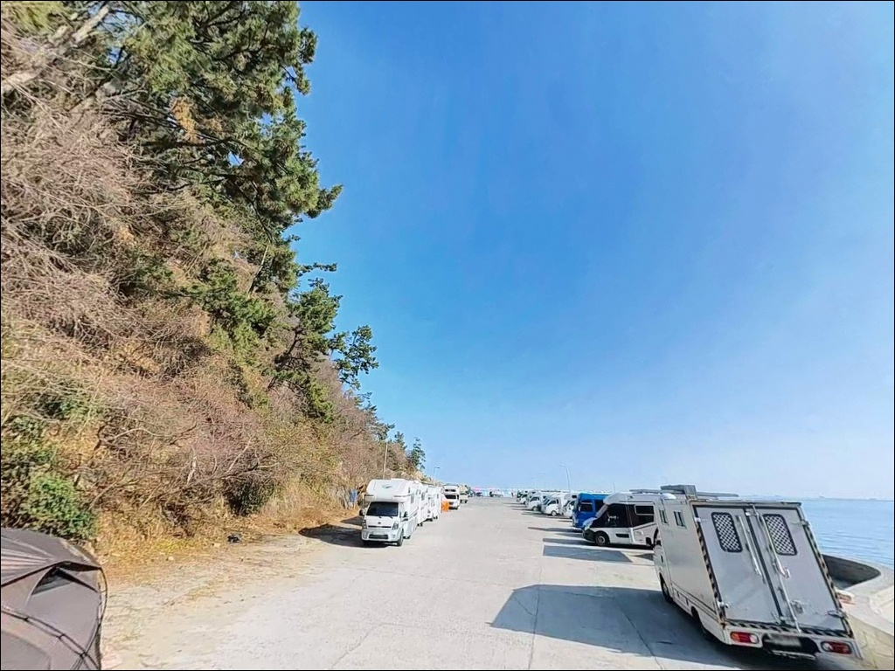
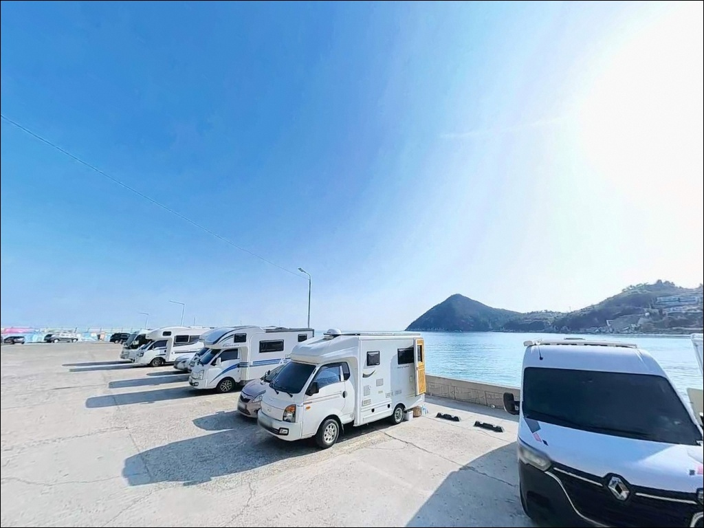
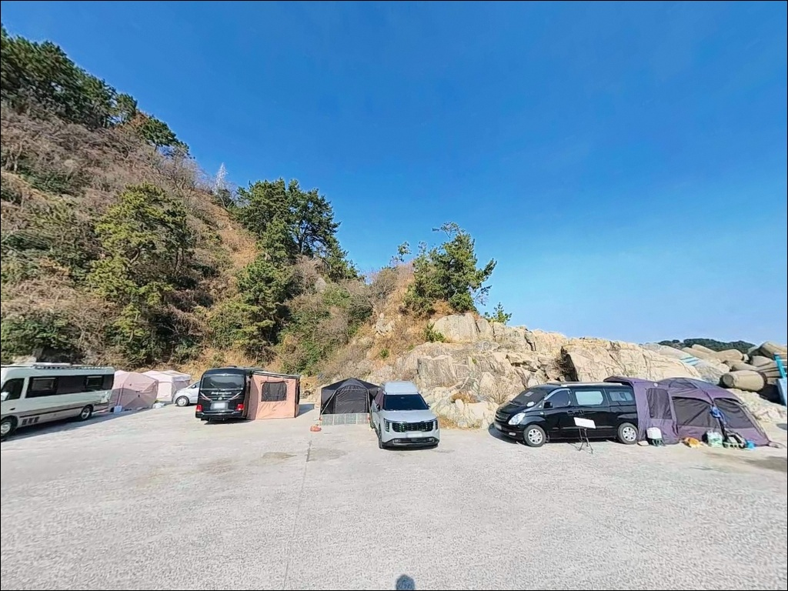
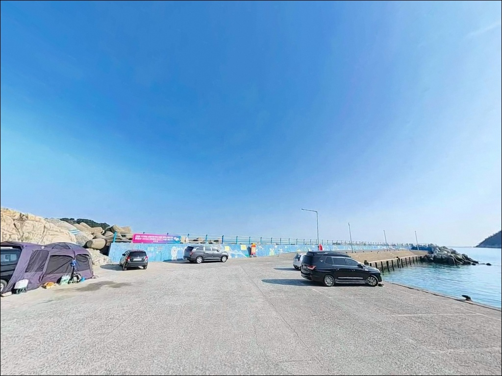
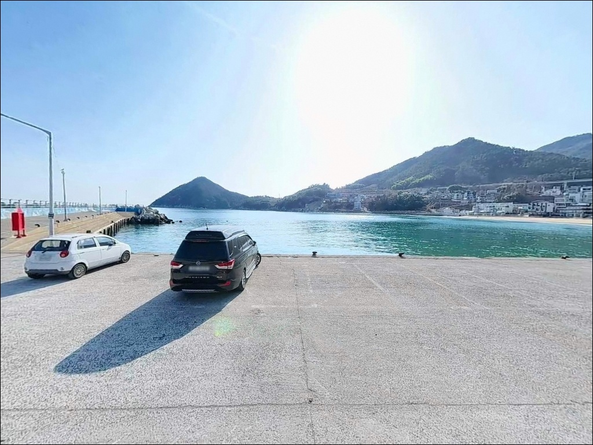

이 페이지에는 광고(제휴 링크 포함)가 있으며, 광고 링크를 통해 구매하면 운영자가 판매 수익 또는 수수료를 받을 수 있습니다. 포인트 사진: 카카오맵 스카이뷰·로드뷰. 이 페이지의 지도·사진 이미지는 카카오맵의 실제 서비스 이미지와 다를 수 있습니다.

흥남방파제
경남 거제시 장목면 시방리 280-8
내항 쪽에 자리를 잡으면
흥남방파제의 핵심을 절반도 쓰지 못한 채
돌아오게 됩니다.
내항은 수심 3~4m의 모래·몽돌 바닥 구조로
조류 흐름이 약해,
에깅이나 릴찌채비가
제대로 힘을 발휘하기 어려운 자리입니다.
이 글은 흥남방파제의
외항 구조와 이수도 물골 활용법,
낚시 스타일별 공략 조건,
차박 가능 공간과 시즌별 주의사항에 집중합니다.
조황 단정이나 특정 어종 보장은
이 글의 범위에 포함되지 않습니다.

흥남방파제는 거제 북로에서
흥남해수욕장 방면으로 진입하는 구조입니다.
진입로는 포장도로로 연결되어 있으며,
방파제 입구까지 차량 진입이 가능합니다.
진입로 폭은 넓지 않고 경사 구간이 포함되어 있어,
대형 캠핑카는 사전에 경사 구간 통행 가능 여부를 확인하는 것이 좋습니다.
회차는 해수욕장 끝 공터와 방파제 입구 인근에서 가능합니다.
주차 후보지는 흥남해수욕장 전면 주차공간과
방파제 입구 인근 공터 두 곳입니다.
두 곳 모두 넓은 평지형 구조여서
차량 방향 잡기가 수월한 편입니다.
다만 여름 성수기(7~8월) 주말에는
서핑객·해수욕객 차량이 집중되어
주차 공간 확보 경쟁이 심화됩니다.
낚시 목적 방문이라면
성수기 외 시즌을 택하는 것이
진입과 주차 모두에서 유리합니다.

흥남방파제의 차박 베이스는
흥남해수욕장 전면 주차공간입니다.
바다를 정면으로 바라보는 위치로
차박 자체의 입지는 좋은 편이나,
해수욕장과 맞붙어 있는 구조상
완전한 격리형 환경은 기대하기 어렵습니다.
야간에는 해수욕장 구역 가로등이 일부 켜져 있어
이동 시 조명은 확보됩니다.
다만 방파제 끝단 구간은 어두운 편이어서
야간 낚시 시 개인 헤드랜턴은 필수입니다.
외항은 이수도 방향 외해로 열려 있어
기상 악화 시 파도와 바람의 영향을 직접 받는 구조이므로
풍랑특보 발효 여부를 출발 전 반드시 확인해야 합니다.
인근 펜션과 민가가 분산 배치되어 있어
야간 통행이 완전히 없지는 않습니다.
성수기 외 시즌은 상대적으로 조용한 편이어서
낚시 후 가볍게 하룻밤 머무는 용도로는
무난한 환경입니다.

흥남해수욕장 구역에
화장실이 갖춰져 있습니다.
샤워실은 여름 성수기에 한정 운영됩니다.
낚시 출조 기준으로는 화장실 여건이
준수한 편에 속합니다.
반경 3km 이내에는
시방리 일대 이수편의점이 있어
기본 소품 보충이 가능합니다.
낚시 용품이 필요하다면
장목면 외포리 방향 약 4km 거리의
외포낚시상회(영업 05:30~22:00)를 활용하는 것이
가장 빠른 동선입니다.
24시간 편의점은
장목면 방향 약 4km 거리에
세븐일레븐 거제장목점이 운영됩니다.
식수·얼음·채비 소품은
출발 전에 충분히 준비하고 진입하는 것이
현장에서 시간을 낭비하지 않는 방법입니다.

흥남방파제 방문 전 가장 먼저 확인할 것은
물때와 기상입니다.
이수도와의 사이 물골 구조상 조류가 살아있는 시간대와
그렇지 않은 시간대의 낚시 여건 차이가 큽니다.
바다타임에서 장목면 기준 물때를 확인하고
들물 또는 날물이 흐르는 타이밍에 맞춰
입장 시각을 잡는 것이 기본 전략입니다.
외항은 이수도 방향 외해로 열려 있어
기상 변화의 영향을 직접 받습니다.
풍랑특보가 발효되면 외항 끝단 접근 자체가
위험해지는 구조이므로
기상청 예보는 당일 아침 다시 확인하는 것이
포인트 낭비를 막는 조건입니다.
외항 끝단 주변은 조류가 빠르고
너울 영향이 있는 구간입니다.
방파제 끝단 낚시 시 구명조끼는 기본 착용이며,
야간 단독 출조에서는 특히 필수입니다.
여름 성수기에는 서핑·해수욕 구역과 낚시 구역을
명확히 구분하여 채비 투척 방향에 주의해야 합니다.

흥남방파제의 지형 핵심은
이수도와 방파제 사이를 흐르는 물골입니다.
이 물골은 조류 소통의 중심축으로,
외항 끝단 방향으로 나아갈수록
수심이 6~8m로 깊어지고
해초 군락과 수중여가 발달한 암반·여밭 구조로 바뀝니다.
먹이 활동 여건이 집중되는 구간이 외항 쪽에
형성되는 이유입니다.
반면 내항은 수심 3~4m의 모래·몽돌 혼합 바닥으로
조류 흐름이 약하고 어종 다양성이 낮습니다.
방파제 시작부 30m 이후부터 끝단까지의
외항 전 구간과
방파제 좌측으로 연결되는 갯바위 라인이
이 포인트의 실질적인 공략 구간입니다.
물골이란 조류가 집중적으로 흐르는 수중 통로로,
이곳을 중심으로 먹이 활동이 활발해지는 경향이 있습니다.
흥남방파제에서 자리 선택의 기준은
이 물골의 영향권 안에 채비가 닿는지 여부입니다.
흥남방파제 조황은 출조 전에 검색해 두시기 바랍니다.

이 포인트에서 가장 먼저 꼽히는 낚시는
무늬오징어 에깅입니다.
거제도 전체에서도 에깅 시즌이
이른 시기에 시작되는 포인트 중 하나로,
인근 시방방파제와 함께
장목면 에깅 양대 거점으로 꼽힙니다.
외항 방향, 물골 연변을 집중 공략하는 방식이
이 포인트 구조에 맞습니다.
릴찌낚시 역시 이 포인트에서 자리를 잡은 방식입니다.
릴찌낚시란 릴을 장착한 찌낚시 채비로
조류를 타며 원거리 감성돔·벵에돔을 공략하는
낚시 방식입니다.
외항 조류가 흐르는 시간대에
방파제 끝단과 꺾이는 지점을 집중 공략하면
감성돔은 가을, 벵에돔은 여름 후반~가을 씨알이
굵어지는 경향이 있습니다.
볼락 루어낚시도 이 포인트에서 활발한 스타일입니다.
방파제 주변 해초 군락과 암반 지대에서
볼락 반응이 확인되며,
야간에 소형 지그헤드 채비로
암초 경계선을 천천히 탐색하는 방식이 어울립니다.
농어는 모래·해초 경계선을 미노우로
노리는 동선이 유효합니다.
원투낚시는 해수욕장과 방파제 연결 지점에서 활용합니다.
모래 바닥 구간에서 도다리·보리멸 계열이
기대되는 지형이며,
야간 원투에서 붕장어도 노려볼 수 있습니다.
조류가 느려지는 정조 타이밍을 앞에 두고
채비를 멀리 보내는 방식이
이 구간에서 유효합니다.

흥남방파제가 만석이거나
파도·바람 방향이 불리할 때
가장 먼저 이동할 대안은
시방방파제입니다.
흥남방파제에서 북쪽으로 약 1km 거리에 있고,
이수도 물길의 영향권 안에 함께 놓여 있어
어종 패턴이 유사합니다.
장목면 에깅 시즌에 흥남과 함께
세트로 묶어 탐색하는 동선이 효율적입니다.
기상이 나빠 외해 방파제가 어려울 때는
외포항 방파제가 내만형 대안이 됩니다.
장목면 외포리 방향으로 약 4km 거리이며,
외포낚시상회가 인근에 있어
채비 보충과 낚시를 동시에 해결할 수 있는 동선입니다.
차박 거점을 옮겨야 할 때는
장목면 구영리 황포해수욕장이
보조 대안이 됩니다.
흥남에서 약 5km 거리로,
파도가 잔잔하고 모래가 고운 환경으로
알려진 곳입니다.

에깅·릴찌낚시·볼락 루어·원투낚시까지
복합 공략이 가능한 포인트를 찾는 낚시인이라면
흥남방파제의 외항 구조는
기대해볼 만한 조건을 갖추고 있습니다.
거제 북부권에서
무늬오징어 에깅이 이른 시기에 시작되는
포인트로 꼽히는 곳이기도 합니다.
반면 진입 전 기상 확인 없이 찾아가거나,
물때를 고려하지 않고
내항 쪽에 자리를 잡으면
이 포인트가 가진 조류 여건을
전혀 활용하지 못하는 결과로 이어집니다.
흥남방파제 진입 전 기상 확인은
외해 노출형 구조상 선택이 아닌 기본 조건입니다.
화장실이 갖춰진 해수욕장 주차공간을
차박 베이스로 활용하면서
물골 조류가 살아있는 타이밍에
외항 끝단에 채비를 띄울 수 있다면,
낚시와 차박을 함께 소화하기에
나쁘지 않은 선택입니다.